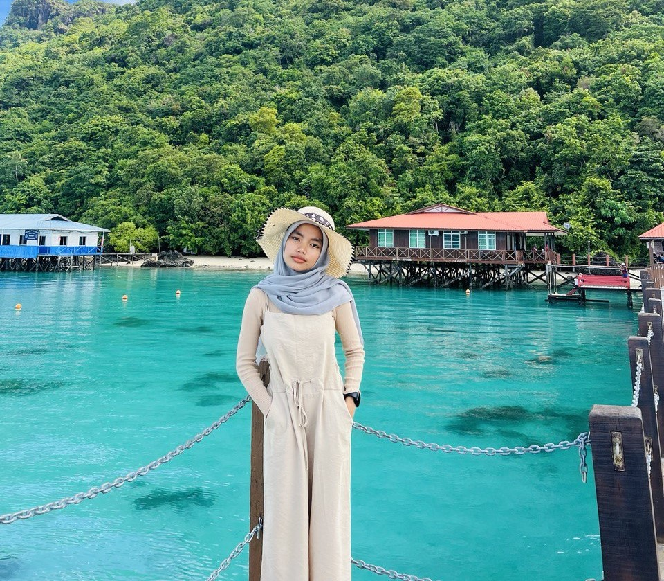
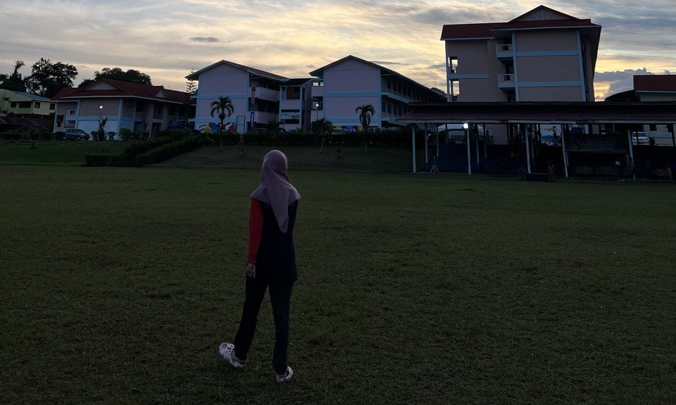
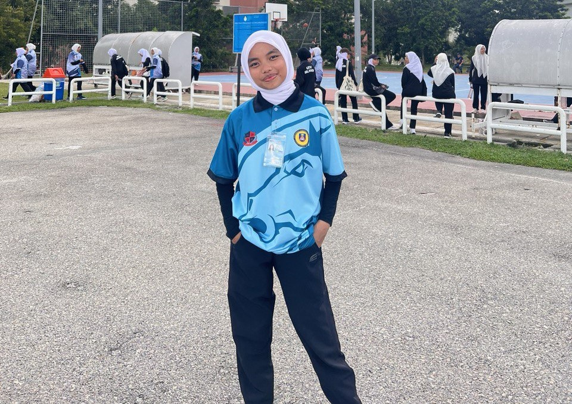
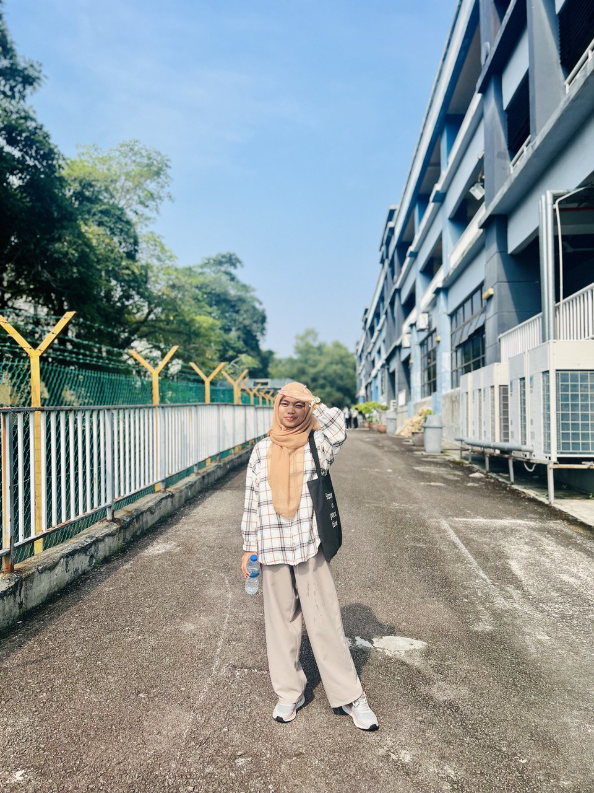
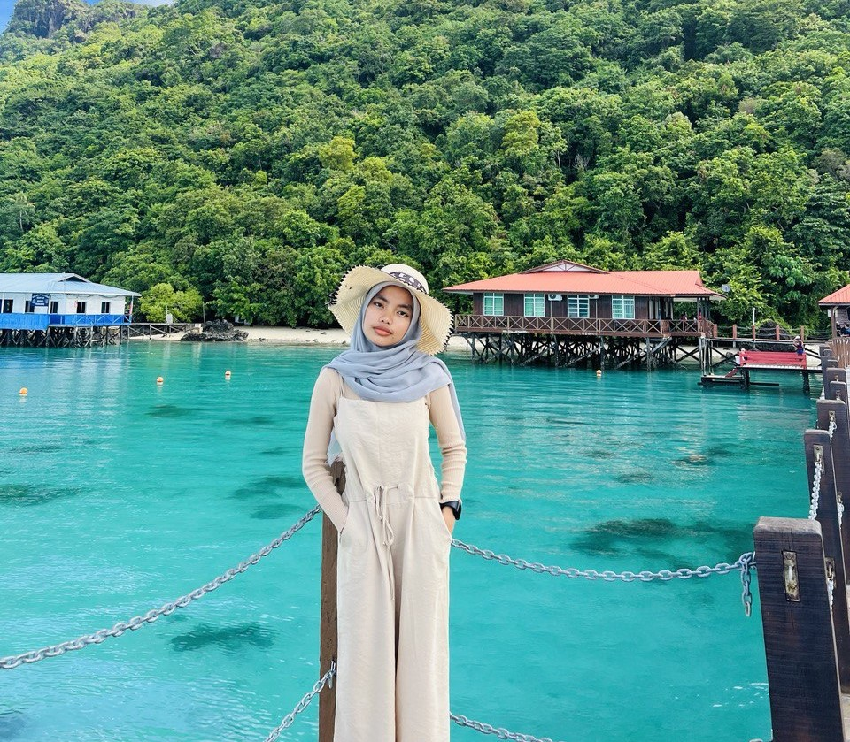
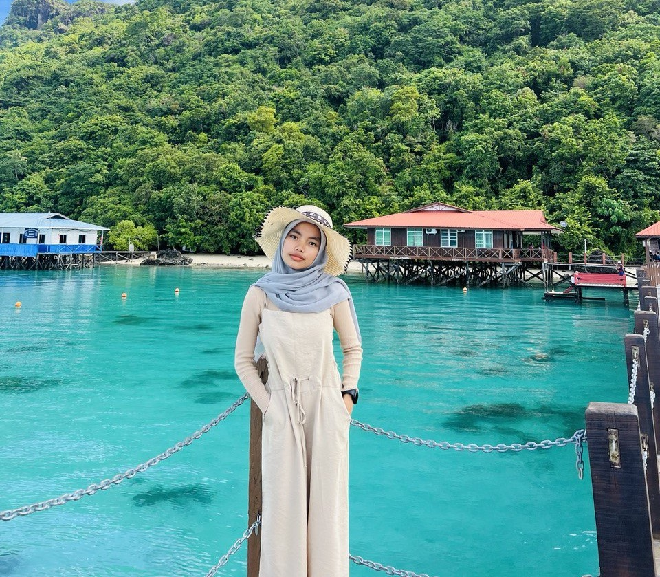
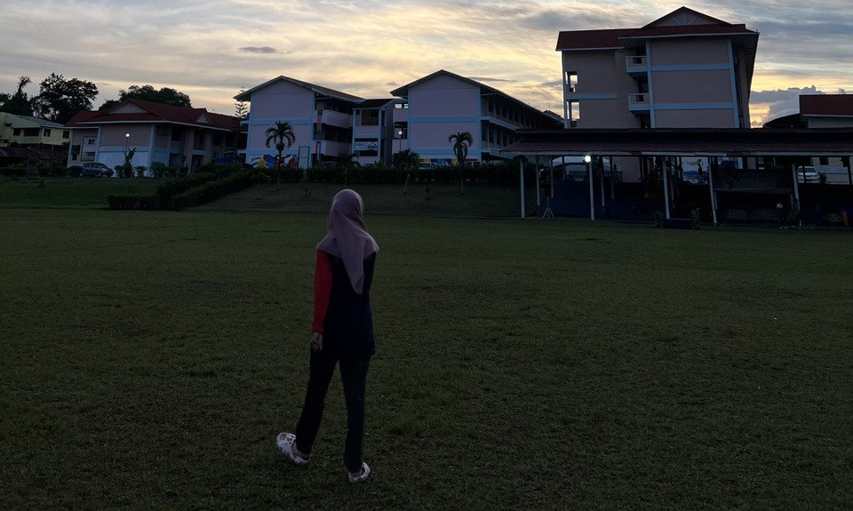
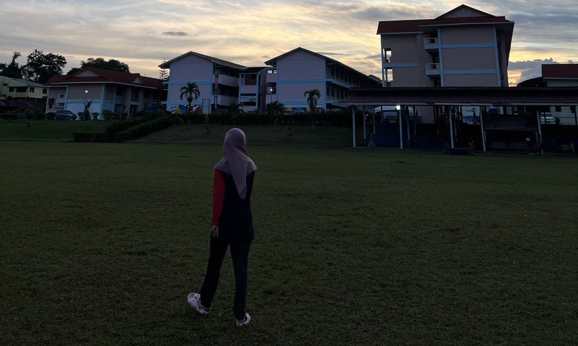

Assalamualaikum and hai. My name is Siti Anizah binti Julman. I am 21 years old, and currently taking a degree at UiTM. I am from Semporna, Sabah and grew up in Semporna. Live in the dormitory from form 1 until form 3. Then moved to regular day school from form 4 until form 5

When I was in Form 5, my father was transfered to Smk Balung, Tawau. So I continued form 5 in Semporna and lived with my aunt. When I entered form 6, I moved to SMK Balung. The subjects I take are Sports Science, History and Business. Despite many obstacles, I managed to finish my education in Form 6.

I took a degree at Uitm Puncak Perdana with the cost of Library Management. Being a migrant child is not an easy thing, but for the sake of the future and the happiness of my parents, I continue to be strong to face this time of degree full of joys and sorrows.


Since I was a child, I lived with a beautiful sea view in Semporna. The name of my village is Pulau Manampilik. This is one of the calm sea views I see everyday.
 

 
